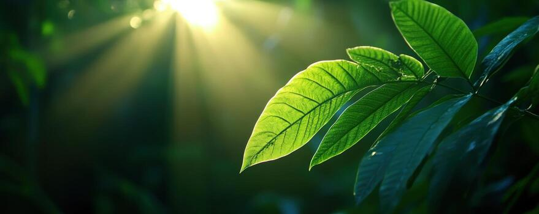

The Story
Long before animals roamed the Earth, ancient microbes and early plants unlocked the ultimate secret: how to eat the sun. Through the magic of chlorophyll, the green pigment that gives plants their vibrant hue, leaves intercept photons traveling from our sun. This process bridges the gap between the vastness of the cosmos and the microscopic machinery of biological lifeforms.
In a brilliant display of biological alchemy, plants draw water from the soil and carbon dioxide from the air. Using the captured solar energy, they break these molecules apart and recombine them to form glucose—a sugar that serves as fuel for the plant's growth. The byproduct of this extraordinary reaction? Oxygen.
This means that every breath we take is quite literally a gift from the stars, mediated by the flora that covers our planet. Photosynthesis forms the base of almost every food chain. From the smallest blade of grass to the towering canopies of ancient forests, these living solar engines sustain the intricate web of life, ensuring that the energy of the universe flows continuously through our world.

Philosophical Questions
Are we made of starlight?
Since the energy that fuels our bodies ultimately comes from the plants we eat—or the animals that consumed those plants—we are literally running on captured solar energy. Photosynthesis proves that the boundary between Earth and the universe is porous.
This challenges the idea that we are isolated from the cosmos, hinting instead that the energy of the stars flows directly through our veins.
What does it mean to give more than you take?
Plants consume sunlight and carbon dioxide, and in return, they provide the oxygen necessary for countless other species to exist. They do not hoard their byproducts; they release them into the atmosphere.
This raises a profound thought about biological altruism, where the natural byproduct of one organism's survival becomes the very foundation of another's breath.